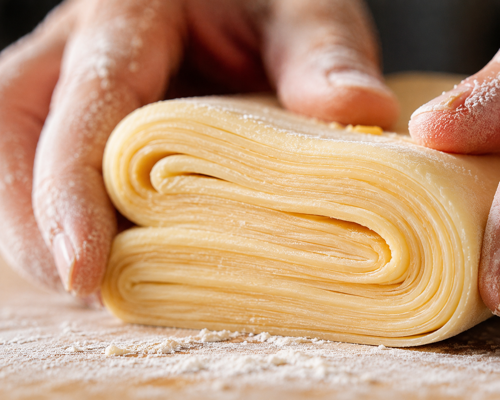

The 128-Layer Technique
Our signature pastry is an exercise in culinary thermodynamics. We don't just bake; we engineer.
- 1. Temperature Control: Dough is proofed at a constant 22°C to ensure optimal texture.
- 2. Lamination: Exactly 128 layers of premium butter are folded through mechanical precision.
- 3. Final Bake: Caramelization occurs at 185°C for the signature golden finish.